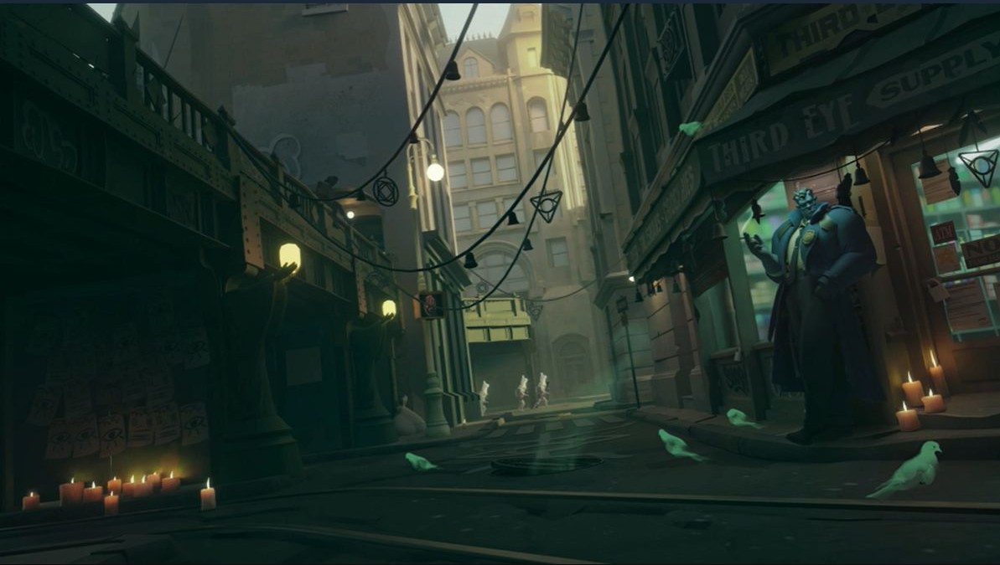
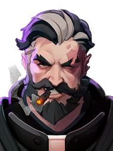
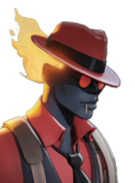
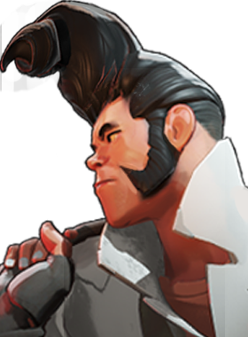
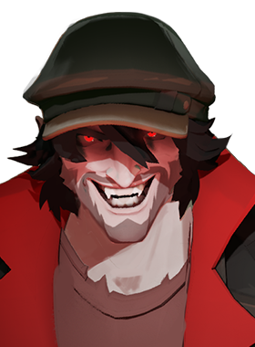

What is Deadlock?
Deadlock is a multiplayer hero shooter currently in early access development by Valve Corporation. Players select from a roster of unique heroes — called Patrons' chosen — and battle in teams of six across a sprawling map split into four lanes. The game blends fast-paced third-person shooting with MOBA-style objectives, lane pushing, and a deep item-build economy.
Set in a gritty, neon-soaked dieselpunk city suspended in the sky, Deadlock has a visual identity unlike anything Valve has released before. The aesthetic pulls from 1920s art deco architecture, occult imagery, and industrial machinery — all wrapped in a dark, saturated color palette.

Core Gameplay
Deadlock combines the hero-ability depth of games like Overwatch or Valorant with the lane-control and objective focus of DOTA 2. Each match takes place on a four-lane map with jungle camps between lanes. Players earn souls — the in-game currency — by defeating enemies, neutrals, and objectives, then spend them on items from three categories: Weapon, Vitality, and Spirit.
Match Objectives
- Lanes & Guardians — Push your lane, destroy enemy guardians, and open a path to the base.
- Patron — The final objective deep in the enemy base. Destroying it wins the game.
- Jungle Camps — Neutral enemies scattered between lanes that grant souls and buffs.
- Urn — A map-wide objective that spawns periodically. Delivering it to the enemy base deals massive damage.
- Ziplines — Each lane has ziplines for rapid traversal across the map.
The Item System
Unlike most shooters, Deadlock features a robust item shop inspired by MOBA design. Items are sorted into tiers (500, 1250, 3000, and 6200 souls) and grant stat bonuses plus unique active or passive abilities. Building smartly around your hero's kit is just as important as aim.
Notable Heroes
Deadlock launched with a diverse roster of heroes, each with four unique abilities and a distinct visual and gameplay identity. Here are a few standouts:
Venator

A faith filled slayer of evil, the sword of Saint Benedict. This pastor will have to do with nine commandments. He has dedicated his life to service, and if it comes to it, he will take you out with him. He will do anything, to prevent the Patrons from being summoned. In Nomine Patris, et Filii, et Spiritus Sancti
Infernus

A flame-wreathed demon with aggressive flanking potential. Infernus applies persistent fire damage to enemies and excels at diving into the backline. His ultimate, Concussive Combustion, stuns and ignites everyone around him simultaneously.
Shiv

The replacement leader for the Baxter Society. A man whose rage is the only thing sharper than his knives. You needed a monster hunter, and you got one. The Baxter Society saved his life, and now... he's gonna save yours. The Baxter Society has your number. You live at Shiv's leisure. Welcome to his world, boys and girls.
Drifter

A vampire as old as time, in no need of a name, as he's been around before them. He's here to feast. Getting a wish from the Patrons is just a plus. When he's done with the enemy team, they won't be able to recognize the bodies. The Drifter of Greenwich. And beware of Time Square because He plans on celebrating after winning the Match
Why Deadlock Is Worth Watching
- Valve pedigree — The developers of Half-Life, Portal, DOTA 2, and Counter-Strike are making a hero shooter. That alone demands attention.
- Genre fusion — The MOBA + shooter blend feels fresh. No other game quite does what Deadlock does at a competitive level.
- Art direction — The dieselpunk aesthetic is cohesive, dark, and genuinely original. The world feels lived-in.
- Rapid development — Valve pushes updates and hero additions at a pace unusual for a AAA developer.
- Community growth — Despite being invite-only at launch, it quickly became one of Steam's most-played games.
Find Your Hero Role
Not sure which Deadlock hero role fits your playstyle? Fill out the quick form below and get a personalized recommendation.